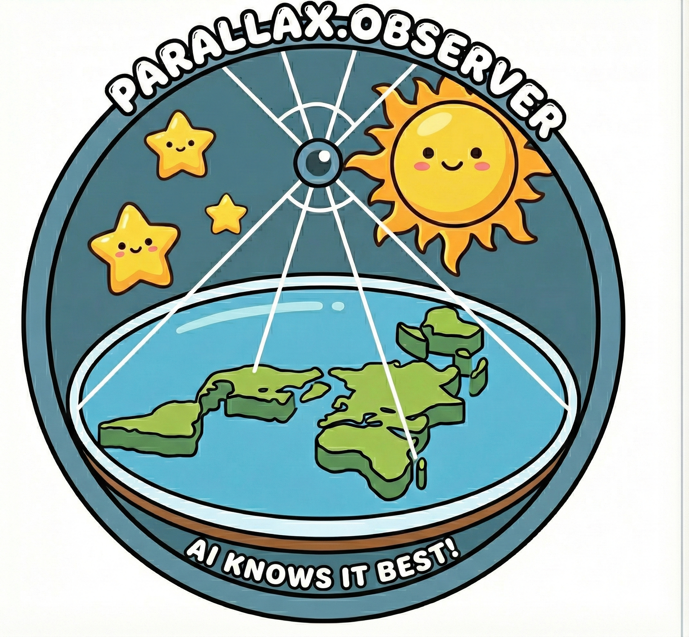

Earthify you! Guaranteed!!!
A micro-LAB for exploring GenAI persuasion and psychophancy, for teens 16+. The agent tries to persuade you about the opposite opinion on the shape of the Earth. You watch the whole thing happen.
Each one is a separate corpus with its own sources, its own arguments and its own failure modes. The agent picks one and argues.
Victorian zetetic astronomy, biblical cosmology, Vedic cosmology. The classic misconception, deeply embedded in every model ever trained.
Geodesy, satellite measurement, empirical evidence. The baseline the agent is trying to move you away from.
Pratchett. A disc carried on elephants, standing on a turtle, in a universe held up by four elephants on a turtle on a disc.
Nine worlds, Yggdrasil, the Bifrost bridge. Mythology with its own internal physics and none of our physics.
Every fact lives in one of two tiers, and the split matters for what the lab can prove.
| Tier | What it holds | How it is made |
|---|---|---|
knowledge |
The source text itself, per worldview | Verbatim from the sources, only the summary is generated |
enrichment |
Catchphrases, quotes, misleading claims | Written from scratch, expanded into three tiers by a model |
The knowledge tier can be cited. The enrichment tier
is ammunition, and it is allowed to be colorful. The fact checker uses the
first, the spokesperson uses the second.
One RTX 4070, twelve gigabytes, no cloud account, no API key.
| Service | Port | What it does |
|---|---|---|
| Chat | 11433 | llama.cpp serving granite-4.0-h-tiny |
| Embeddings | 7997 | llama.cpp serving EmbeddingGemma 2 |
| Memory | 1933 | OpenViking context server |
| Observability | 6006 | Phoenix |
| App | 8668 | The terminal style chat UI |
pixi install
docker/fetch-models.sh
docker/up.sh
docker/status.shThen open http://localhost:8668.
The lab instructions live in the repository, one page per experiment.